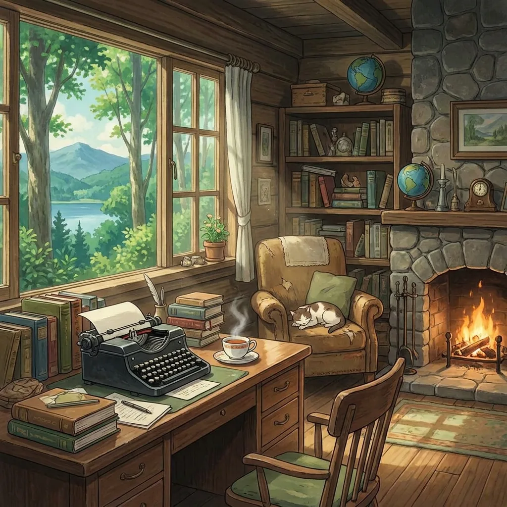

Printable Brain Games for Adults
Let's start with the part most brain-game articles skip: the science of "brain training" is humbler than the marketing. The consistent finding across studies is that practicing a puzzle makes you better at that puzzle and things close to it — transfer to general intelligence or memory is weak. So why bother? Because the honest case for a daily paper puzzle is still strong: focused, screenless engagement; a genuine challenge with a finish line; and a routine you'll actually keep because it's enjoyable. If a habit is pleasant, portable, and free, it doesn't need inflated claims.
Why paper beats the app version
The same puzzle on your phone arrives bundled with notifications, ads every third round, and a feed one thumb-swipe away. On paper, the puzzle is the only thing on the table. Add a pencil (fine motor work, and satisfying), no blue light before bed, and the fact that a printed sheet never asks for a subscription, and paper wins on everything except convenience — which printing a week's batch on Sunday solves.
The honest ranking
Ranked by what they train and how well they survive daily repetition:
- Crosswords — vocabulary, recall, general knowledge. The classic for a reason; the main cost is that difficulty is inconsistent between setters. Best verbal option.
- Sudoku — working memory and logical elimination. Infinitely printable, perfectly graded (easy → expert), zero vocabulary requirement. Best logic option.
- Spot-the-difference (hard mode) — visual attention, working memory, systematic scanning. Routinely dismissed as a kids' format, which is unfair: a dense scene with 10–15 subtle changes (a mirrored object, a slight resize) is legitimately demanding for adults, and it's the only puzzle on this list that trains visual attention rather than verbal or numeric reasoning. Generated puzzles mean you never repeat one.
- Logic grid puzzles — deduction and note-keeping ("the baker isn't in the red house…"). Excellent, but consumable: each puzzle is single-use and good sets run out.
- Cryptograms — pattern recognition and letter-frequency intuition. Niche but addictive for the right person.
- Word search — visual scanning, but shallow; fine as a warm-up, undemanding as a main course.
The 15-minute daily mix
A single puzzle type trains a single groove. The routine that stays interesting alternates channels:
- Warm-up (2–3 min): something light — a word search or an easy sudoku.
- Main course (8–10 min): rotate by day — crossword (verbal), harder sudoku or logic grid (reasoning), spot-the-difference on hard (visual attention).
- Cool-down: stop while it's still fun. A routine you look forward to beats a longer one you abandon in March.
Print the week's sheets in one batch and keep them with a decent pencil somewhere you already sit — the coffee table, the breakfast spot. Friction, not motivation, is what kills paper habits.
Two upgrades most people skip
Large print is a performance upgrade, not an accessibility concession. Squinting is cognitive load spent on your eyes instead of the puzzle. If you print spot-the-difference puzzles, print them big — a full page per image pair. (For care settings specifically, see our seniors & care homes guide.)
Make it social. The most underrated brain exercise attached to any puzzle is doing it with someone — two copies of the same spot-the-difference sheet is an instant head-to-head race, and a crossword done aloud as a pair is half puzzle, half conversation. If your competition lives elsewhere, there's a free online versus mode where up to eight people race on the same board in real time.
When it stops feeling hard
The point of the routine is challenge, and any puzzle you've mastered quietly stops providing it. Two signs you've plateaued: you finish without ever feeling stuck, and you catch yourself doing the puzzle while thinking about something else. The fix is deliberate progression, and each format has a dial — move up a sudoku tier, switch from the Monday crossword to the Thursday one, or push spot-the-difference from 8 differences in a sparse scene to 12 subtle ones in a dense scene. A simple pencil habit keeps you honest: jot the date and your completion time in the corner of the sheet. When the times get comfortable, that's not a victory lap — that's the signal to turn the dial. The discomfort of "genuinely stuck for a minute" is the whole product; protect it.

Hard-mode spot-the-difference — dense scenes, subtle changes, answer keys on a separate page. New puzzles every time, free and unlimited.
Open the free generator
The bottom line
No sheet of paper will raise your IQ, and anyone promising otherwise is selling something. What a good paper routine genuinely delivers: fifteen screenless minutes of real focus a day, a challenge with a satisfying end, and — if you pick puzzles across verbal, logical, and visual channels — a habit that stays fresh enough to survive the year. That's a modest claim. It's also true, which is more than most brain-game marketing can say.